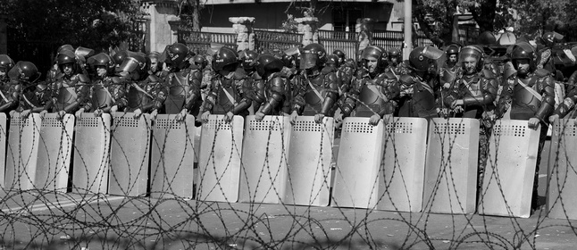
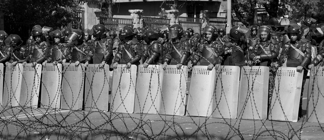
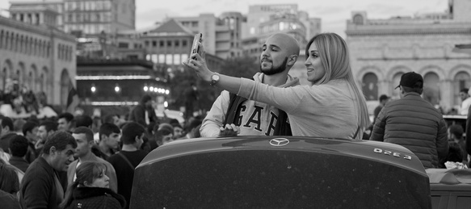
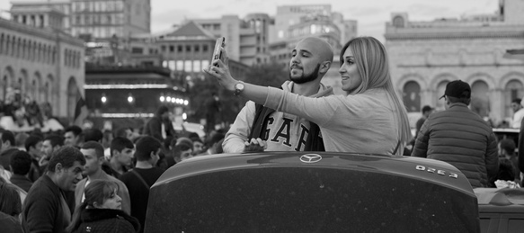

- love
- freedom
- future

Students protest in front of the Ministry of Culture. They demand the resignation of the minister and call for the employees of the Ministry to join them.

In about half an hour police will use force here. The sound granades will leave dozens injured.
 

The barbed wire, helmets and watering machines, police forces and police weapons on one side... Open hands, the drum and hu-hu-huu, on the other.
- dream
- love
- dignity
In People who were just passing by spontaneously joined the events. The extent of participation was different and decided at that moment by that person. It could be as little as taking photos and posting them on the FB up to joining those who block the streets.
In Active participation of young girls is a new and interesting phenomenon for Armenian society which is used to a more traditional, modest way of behaviour by women.
In A long apathy of people an disbelief in themselves and their ability to affect any process in the country has changed to participation and emotional unlifiting.
- against poverty
- against migration
- for my future
In Protestrs of all ages blocked the streets using park benches, cars, public transport and other vehicles. This experience came from the past - the Electric Yerevan protests kept one of the main avenues blocked for more than two weeks in 2015.
In The presence of children brought to the demonstrations by their young parents was harshly criticized by the ruling regime.
 


A mobile devide in the hand of every participator was a tool to document the events, share the information and of course to fix his/ her on the scene.